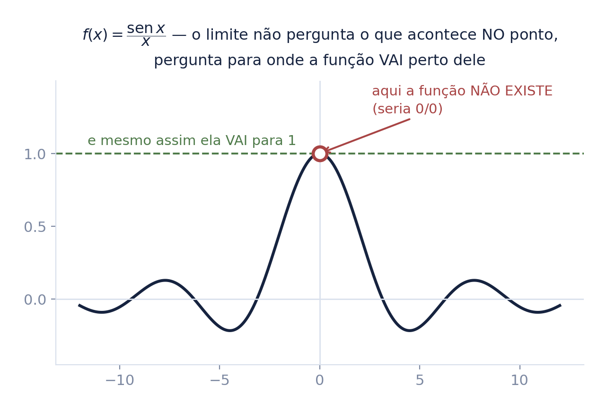
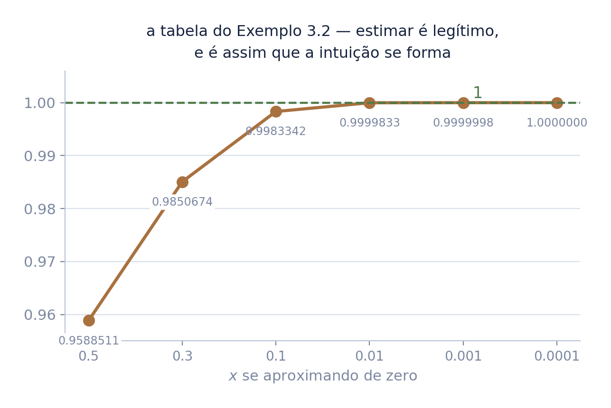
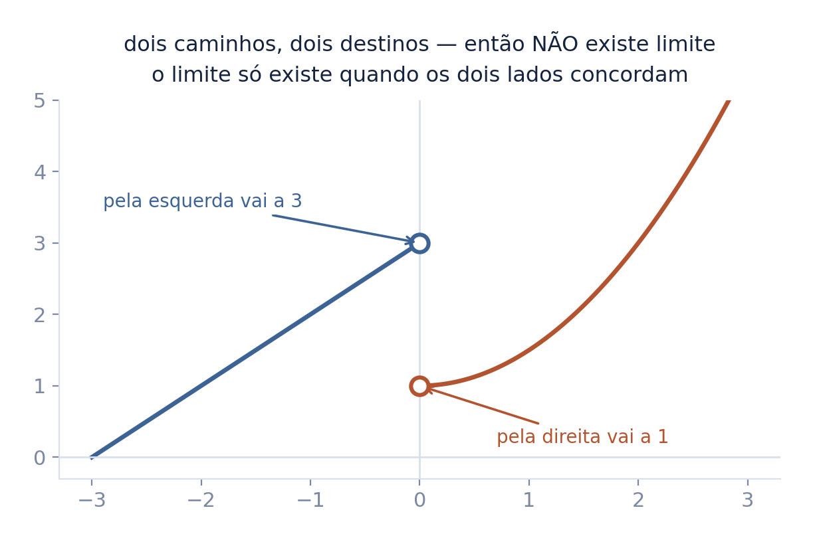
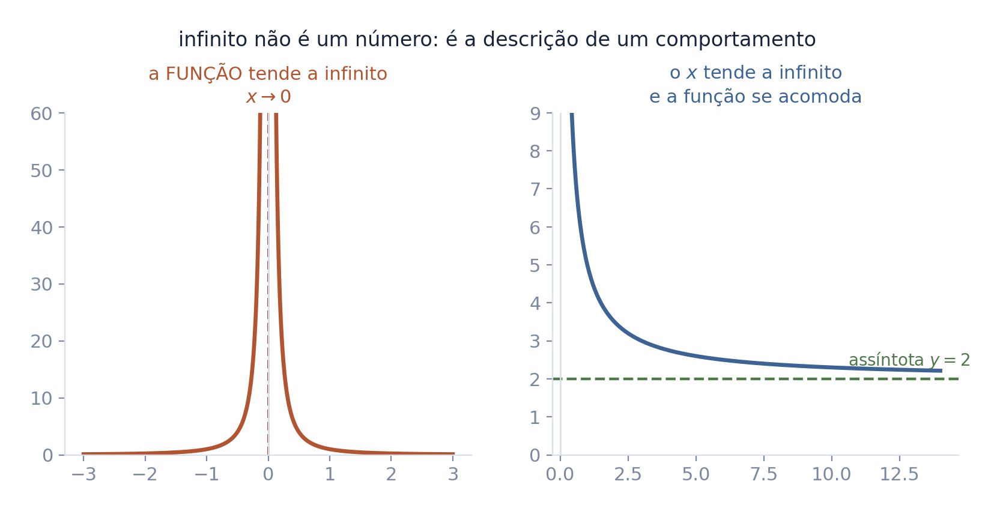
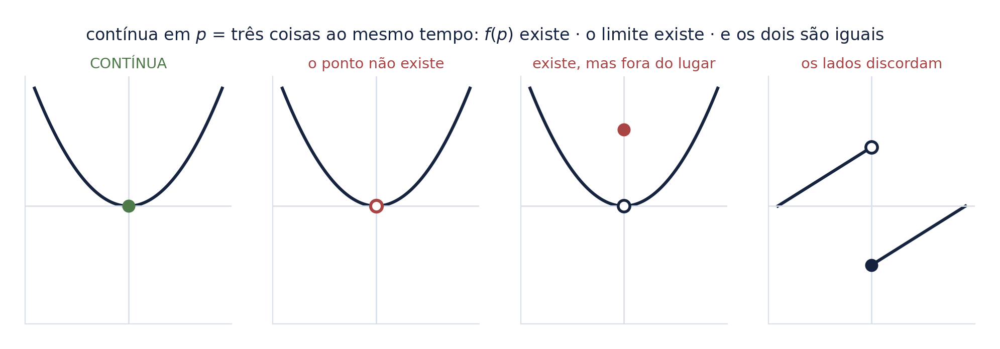
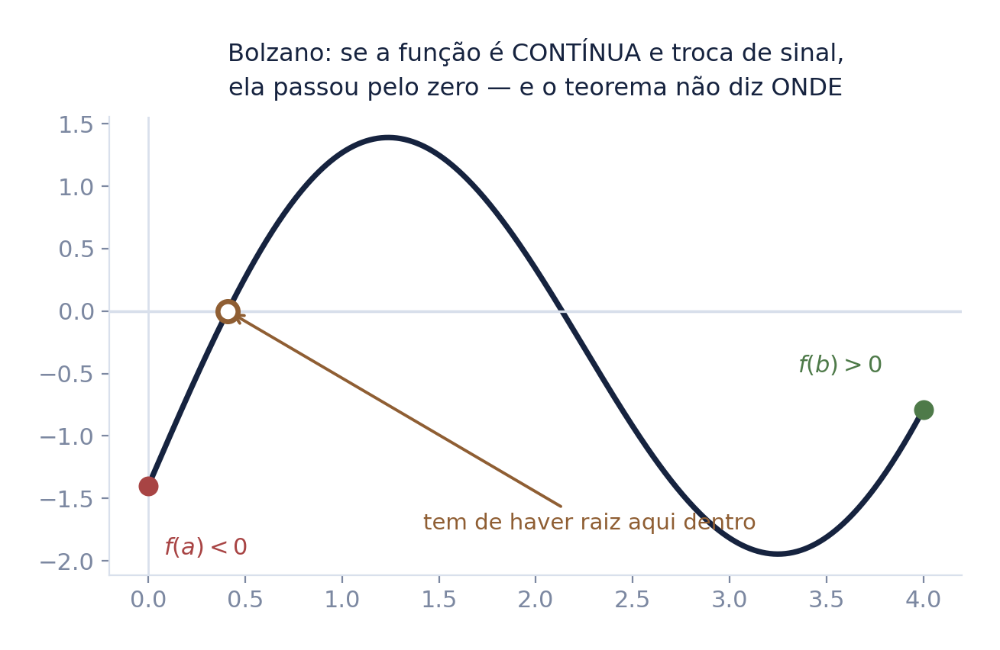
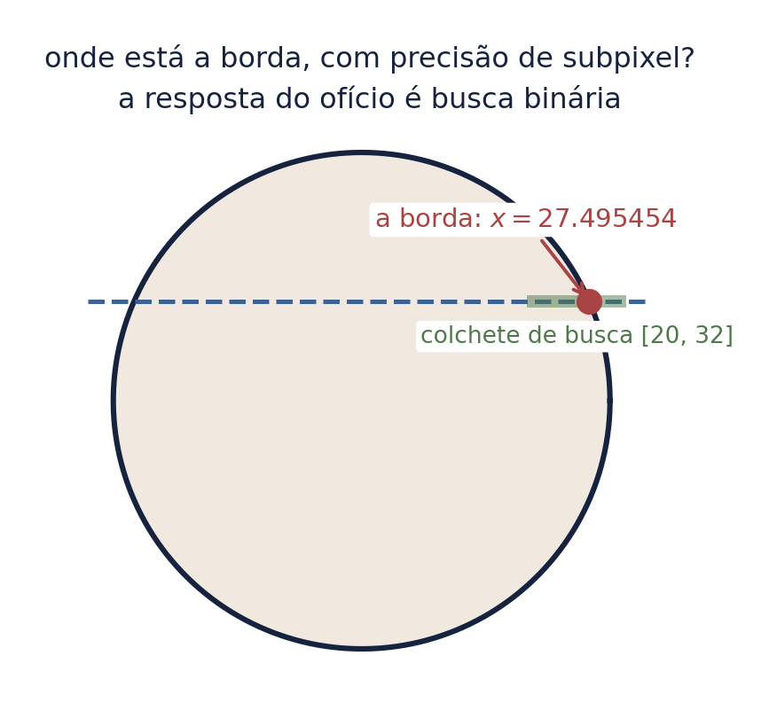
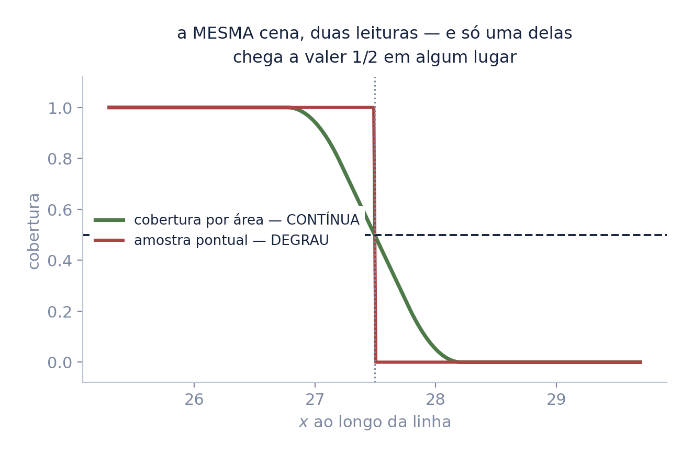
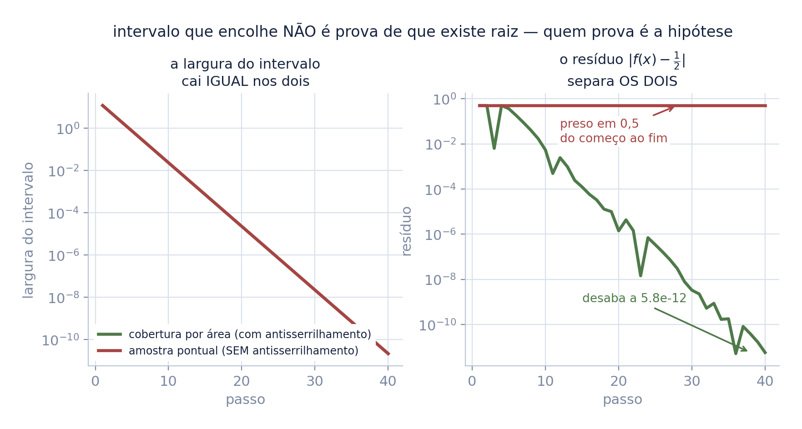
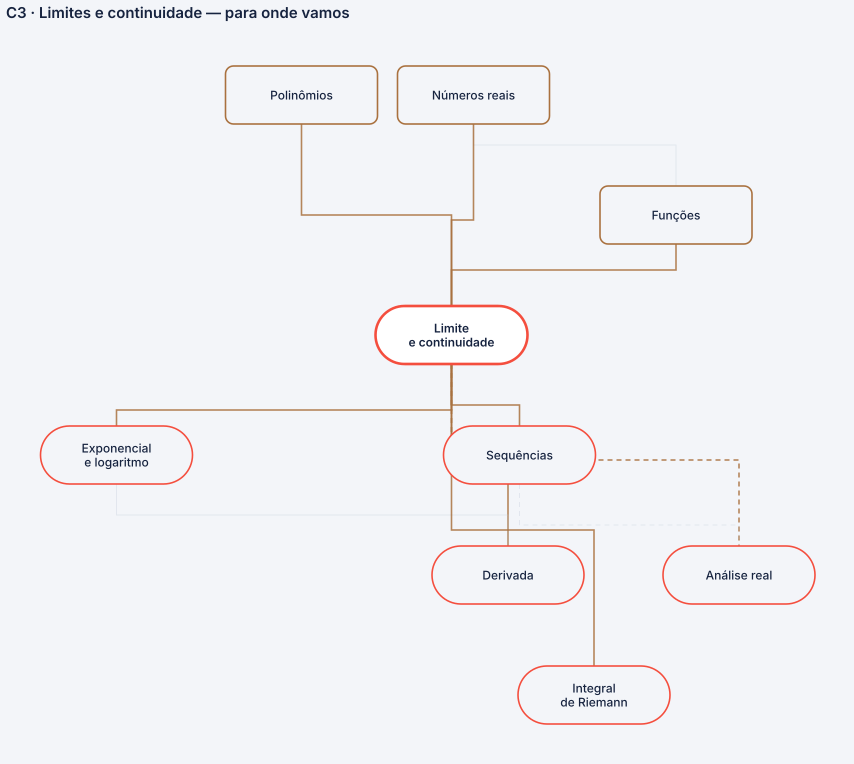

limites e continuidade — e o teorema que licencia a busca binária
O seminário anterior mostrou Arquimedes e Fermat fazendo a conta sem o conceito. Este dá o nome: uma operação nova, que pergunta para onde a função vai perto de um ponto, sem perguntar o que ela faz no ponto.
Fecha em Bolzano — e mostrando, com medida, que o teorema não é enfeite: é a licença de um procedimento que o ofício usa todo dia.
Autor · Mateus Felipe Alkimim Pereira
Coautora · Sara Catiele Nogueira Pereira
Orientador · Rosivaldo Antônio Gohnan
Duas paradas atrás, o Ler um gráfico deixou pronto o que este deck vai usar o tempo todo:
Dá o nome àquela pergunta — limite — e mostra que buraco e salto são exatamente os jeitos de a continuidade falhar.
nada aqui é novo em espírito: você já viu todos esses desenhos. O que muda é que agora eles ganham nome — e com nome se prova teorema.
Somar, multiplicar, elevar — tudo o que temos até aqui responde quanto vale. Nenhuma dessas operações responde a pergunta que as duas questões antigas fazem.
a função não existe em zero. E, olhando o desenho, é óbvio para onde ela ia. O limite é a operação que transforma esse "óbvio" em coisa que se calcula e se prova.
Repare no deslocamento: a pergunta deixa de ser "quanto vale ali?" e passa a ser "para onde vai perto dali?". São perguntas diferentes, e a segunda tem resposta mesmo quando a primeira não tem.

Estime o valor de \(\displaystyle\lim_{x \to 0} \frac{\operatorname{sen} x}{x}\) — avaliando a função em \(0{,}5;\ 0{,}3;\ 0{,}1;\ 0{,}01;\ 0{,}001;\ 0{,}0001\).
A tabela caminha para \(1\), e caminha rápido. Este número vai reaparecer no terceiro seminário, dessa vez demonstrado.
a série abre com um número adivinhado e fecha com o mesmo número provado. No meio, vai mostrar por que adivinhar não bastava.

O limite existe quando, e somente quando, os dois limites laterais existem e são iguais:
\[\lim_{x \to x_0^-} f(x) = \lim_{x \to x_0^+} f(x) = L\]"limite de f de x quando x tende a xis-zero pela esquerda"; o sinal de menos no expoente marca o lado.
"não existe limite" não é a mesma coisa que "a função não existe". Aqui ela existe dos dois lados, com valor em cada um — só não concordam, e o limite exige acordo.

São dois sentidos diferentes, e a separação importa:
escrever \(\lim f(x) = \infty\) é um abuso cômodo de notação: não há número algum ali. A frase honesta é "o limite não existe, e a razão de não existir é que a função cresce sem cota".

\(f\) é contínua em \(p\) quando:
(i) \(f(p)\) existe;
(ii) \(\displaystyle\lim_{x \to p} f(x)\) existe;
(iii) os dois são iguais.
três maneiras de falhar, e a figura mostra as três: o ponto não existe · existe mas fora do lugar · os dois lados discordam. "Contínua" é o caso em que nada disso acontece.

Se \(f\) é contínua em \([a,b]\) e \(f(a)\) e \(f(b)\) têm sinais opostos, então existe \(c \in (a,b)\) com \(f(c) = 0\).
o teorema garante que a raiz existe e não diz onde ela está. Parece pouco. É o suficiente para construir um método que a encontra — e é o assunto das próximas três folhas.
O Valor Intermediário (§3.4.2) é o mesmo enunciado, generalizado: a função contínua assume todos os valores entre \(f(a)\) e \(f(b)\).

Pergunta de ofício, não de livro. Um disco numa imagem; ao longo de uma linha, onde exatamente termina o objeto?
A resposta que todo mundo usa é busca binária: parta o intervalo ao meio, veja de que lado está a resposta, repita.
e busca binária só entrega raiz porque Bolzano garante que existe uma. O teorema não é enfeite de capítulo: é a licença do método.
O colchete de busca foi declarado sem olhar a resposta: \([20,\ 32]\).

Só isto muda entre os dois braços do experimento:
a hipótese de Bolzano é continuidade. O primeiro braço a tem; o segundo, não. Tirar a hipótese custou uma linha de código — e é a única diferença entre os dois.
Repare: a função do degrau vale 0 ou 1. Ela nunca vale \(1/2\), em lugar nenhum.

Quarenta passos de bissecção em cada braço. Medido:
estreitar é aritmética, não análise: a bissecção sempre parte o intervalo ao meio, exista raiz ou não. O que separa os dois é o resíduo — e ele só desaba onde a hipótese vale.
Um intervalo que encolhe não é prova de que existe raiz. Quem prova é a hipótese do teorema.

Ele converge — para o lugar do salto, com erro de \(1{,}6\times10^{-12}\) px. É um ponto legítimo da cena. Só não é o que foi pedido: ali a função não vale \(1/2\).
é o pior tipo de defeito: o método não avisa. Devolve um número plausível, com muitas casas decimais, e nada no resultado denuncia que a pergunta não tinha resposta.
Uma nuance que não se esconde: o braço sem raiz acertou a borda geométrica melhor — \(1{,}6\times10^{-12}\) px contra \(0{,}0018\) px. Não desmente nada, e o motivo não tem a ver com correção: o ponto de 50% de cobertura de uma borda curva sob filtro de caixa não coincide com o cruzamento geométrico. Duas perguntas diferentes, duas respostas certas.
Uma borda serrilhada na tela é um salto: de um pixel para o vizinho, o valor pula de fora para dentro sem passar pelo meio. Limite pela esquerda diferente do limite pela direita — desenhado.
antisserrilhar é comprar continuidade: trocar deliberadamente a descontinuidade por uma rampa, com o pixel da beirada recebendo uma mistura em vez de escolher um lado. Continuidade deixa de ser propriedade abstrata e passa a ser o que se paga para a borda não pular.
E o Teorema do Valor Intermediário é a garantia do ray marching: se a função de distância com sinal muda de sinal entre duas amostras, então existe superfície entre elas. Garantido, não estimado.
A bisseção que acha o ponto de interseção não é heurística de programador: é Bolzano, executado milhões de vezes por quadro.
Este seminário mora no limite — e o limite é o nó mais gasto do mapa: recebe de função, polinômios e reais, e paga em cinco — sequências, exponencial e logaritmo, derivada, integral e análise real.
Por isso a série gasta mais de um episódio nele. Este dá a definição e a continuidade; o seguinte dá o confronto. O nó é o mesmo; o tempo de aula é que não cabe.
não é defeito de nenhum dos dois. Um mapa de pré-requisitos só precisa saber o que precede o quê; uma aula precisa de tempo.

o corpo do seminário ensina; o crédito mora aqui. Foi assim que a série inteira passou a fazer, em 2026-08-24.
Nenhum é decoração: cada um entrou com o conceito que carrega.
| \(\lim\limits_{x \to p} f(x)\) | "limite de f de x quando x tende a pê" |
| \(x \to p^-\) | "x tende a pê pela esquerda" |
| \(x \to p^+\) | "pela direita" |
| \(\infty\) | não é número: marca que a função cresce sem cota |
| \([a,b]\) | intervalo fechado: inclui as duas pontas |
| \((a,b)\) | intervalo aberto: não inclui |
| \(\varepsilon\)-\(\delta\) | "épsilon-delta": a definição formal, que vem no §3.6 — depois desta série |
| bissecção | partir o intervalo ao meio e repetir |
Bolzano é a licença da busca binária — e sem ela o método mente sem avisar
O limite deu nome ao que Arquimedes e Fermat já faziam. A continuidade disse quando é seguro confiar. E Bolzano transformou uma garantia de existência num método de busca.
Falta a ferramenta que calcula limites sem tabela — e um teorema que aprisiona. É o terceiro seminário, e é onde a aula parou.